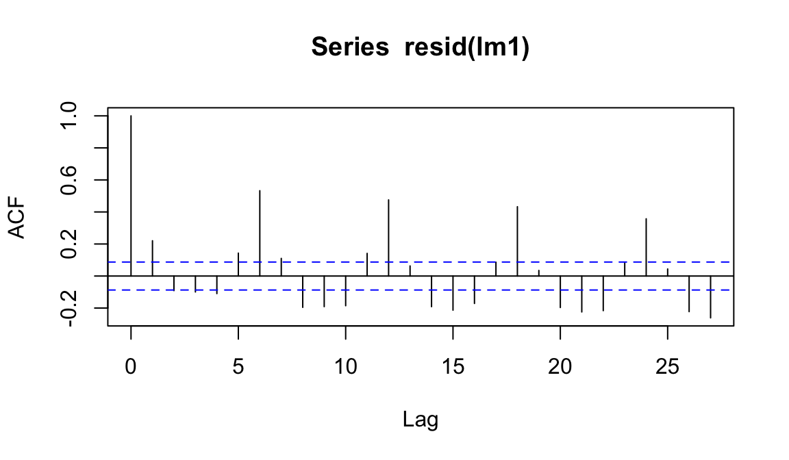
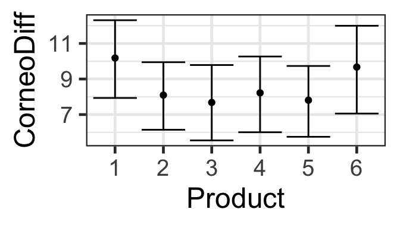

gf_point(CorneoDiff ~ Time | Product, data=hyd.sm) |>
gf_lims(x=c(0,24)) 15 GEEs
So far, we looked at random effects as one way to account for non-independence of residuals due to a variable that we don’t want to include as a regular predictor. Another option for this kind of situation is to use Generalized Estimating Equations (GEEs).
15.1 Data Source
The dataset used here is industry data from a skin care company. It contains data from experiments with 20 subjects. Each person tested 6 different skin moisturizers, and the hydration level of their skin was measured every 2 hours for 24 hours following application of each product. The variables are:
SubjectsNumeric code identifying the personCorneoDiffThe hydration CorneoDiffTimeTime in hours since product applicationProductWhich product was used
The data file can be accessed online at:
15.2 Data Exploration
We would like to model the hydration, CorneoDiff, over time and as a function of product.
gf_point(CorneoDiff ~ Time | Subjects, color=~Product, data=hyd.sm) |>
gf_line(CorneoDiff ~ Time | Subjects, color=~Product, data=hyd.sm) |>
gf_lims(x=c(0,24)) 15.3 Linear Regression
We could try just fitting a linear regression. What do you expect?
lm1 <- lm(CorneoDiff ~ Time + Product, data=hyd.sm)
summary(lm1)
Call:
lm(formula = CorneoDiff ~ Time + Product, data = hyd.sm)
Residuals:
Min 1Q Median 3Q Max
-17.791 -5.349 -1.164 4.415 29.691
Coefficients:
Estimate Std. Error t value Pr(>|t|)
(Intercept) 9.79072 0.87716 11.162 < 2e-16 ***
Time -0.05726 0.02720 -2.105 0.03577 *
Product2 -1.90238 1.10665 -1.719 0.08623 .
Product3 -2.80079 1.10665 -2.531 0.01169 *
Product4 -2.98016 1.10665 -2.693 0.00732 **
Product5 -3.02659 1.10665 -2.735 0.00646 **
Product6 -0.43929 1.10665 -0.397 0.69157
---
Signif. codes: 0 '***' 0.001 '**' 0.01 '*' 0.05 '.' 0.1 ' ' 1
Residual standard error: 7.172 on 497 degrees of freedom
Multiple R-squared: 0.03701, Adjusted R-squared: 0.02538
F-statistic: 3.183 on 6 and 497 DF, p-value: 0.004487gf_point(CorneoDiff ~ Time | Subjects, color=~Product, data=hyd.sm) |>
gf_line(CorneoDiff ~ Time | Subjects, color=~Product, data=hyd.sm) |>
gf_lims(x=c(0,24)) |>
gf_abline(intercept=7.86, slope=0.05608)15.4 Model Assessment
For the linear regression:
acf(resid(lm1))
hyd.sm <- arrange(hyd.sm,Time, Subjects)
lm1 <- lm(CorneoDiff ~ Time + Product, data=hyd.sm)
acf(resid(lm1))As we expected, things do not look good…
15.5 Linear Regression
We tried a linear regression and encountered two problems:
- The residuals are not independent. There seems to be correlation over time within subjects.
- We can’t account for inter-person differences unless we include person as a predictor, but we don’t want to do that, because if we do we can not make predictions from the fitted model without specifying which of these exact people we want to predict for. That’s not ideal - we want predictions for all people, or at least averaged over all people.
15.6 Generalized Estimating Equations (GEEs)
A potential solution we will invesitgate today is to use a generalized estimating equation (GEE) instead of a GLM. GEEs:
- Are a ``PA” model:
- Work by changing…
What residual correlation structures can be accomodated in this framework?
- Independence (
corstr=independence’`) - Exchangeable = Block Diagonal (
corstr=exchangeable’`) - AR1 (first-order auto-regressive) (
corstr=ar1’`) - Unstructured (CAUTION!) (
corstr=unstructured’`)
15.6.1 Fitting GEEs with different correlation structures
library(geepack)
Attaching package: 'geepack'The following object is masked from 'package:MuMIn':
QIChyd <- arrange(hyd, Subjects, Time)
lm1 <- lm(CorneoDiff ~ Time + Product, data=hyd)
summary(lm1)
Call:
lm(formula = CorneoDiff ~ Time + Product, data = hyd)
Residuals:
Min 1Q Median 3Q Max
-22.5776 -5.3165 -0.0275 5.1061 28.0872
Coefficients:
Estimate Std. Error t value Pr(>|t|)
(Intercept) 11.42313 0.48032 23.782 < 2e-16 ***
Time -0.09552 0.01489 -6.413 1.85e-10 ***
Product2 -2.08655 0.60598 -3.443 0.000589 ***
Product3 -2.49940 0.60598 -4.125 3.90e-05 ***
Product4 -1.96107 0.60598 -3.236 0.001235 **
Product5 -2.37238 0.60598 -3.915 9.41e-05 ***
Product6 -0.50833 0.60598 -0.839 0.401669
---
Signif. codes: 0 '***' 0.001 '**' 0.01 '*' 0.05 '.' 0.1 ' ' 1
Residual standard error: 7.17 on 1673 degrees of freedom
Multiple R-squared: 0.04082, Adjusted R-squared: 0.03738
F-statistic: 11.87 on 6 and 1673 DF, p-value: 4.489e-13gee.ind <- geeglm(CorneoDiff ~ Time + Product, data=hyd,
id = Subjects, corstr='independence')
summary(gee.ind)
Call:
geeglm(formula = CorneoDiff ~ Time + Product, data = hyd, id = Subjects,
corstr = "independence")
Coefficients:
Estimate Std.err Wald Pr(>|W|)
(Intercept) 11.42313 1.20102 90.462 < 2e-16 ***
Time -0.09552 0.02342 16.638 4.52e-05 ***
Product2 -2.08655 0.98810 4.459 0.0347 *
Product3 -2.49940 1.03782 5.800 0.0160 *
Product4 -1.96107 1.02207 3.681 0.0550 .
Product5 -2.37238 1.32981 3.183 0.0744 .
Product6 -0.50833 0.95744 0.282 0.5955
---
Signif. codes: 0 '***' 0.001 '**' 0.01 '*' 0.05 '.' 0.1 ' ' 1
Correlation structure = independence
Estimated Scale Parameters:
Estimate Std.err
(Intercept) 51.2 4.017
Number of clusters: 20 Maximum cluster size: 84 gee.ar1 <- geeglm(CorneoDiff ~ Time + Product, data=hyd,
id = Subjects, corstr='ar1')
summary(gee.ar1)
Call:
geeglm(formula = CorneoDiff ~ Time + Product, data = hyd, id = Subjects,
corstr = "ar1")
Coefficients:
Estimate Std.err Wald Pr(>|W|)
(Intercept) 11.4005 1.3968 66.61 3.3e-16 ***
Time -0.2045 0.0322 40.27 2.2e-10 ***
Product2 -2.2329 0.9941 5.04 0.0247 *
Product3 -2.7965 1.0486 7.11 0.0077 **
Product4 -2.4137 1.0402 5.38 0.0203 *
Product5 -2.9857 1.3513 4.88 0.0271 *
Product6 -1.2880 0.9735 1.75 0.1858
---
Signif. codes: 0 '***' 0.001 '**' 0.01 '*' 0.05 '.' 0.1 ' ' 1
Correlation structure = ar1
Estimated Scale Parameters:
Estimate Std.err
(Intercept) 56.9 4.48
Link = identity
Estimated Correlation Parameters:
Estimate Std.err
alpha 0.951 0.00905
Number of clusters: 20 Maximum cluster size: 84 gee.exch <- geeglm(CorneoDiff ~ Time + Product, data=hyd,
id = Subjects, corstr='exchangeable')What is the same (or similar) and what is very different between the models?
15.6.2 Comparing different correlation structures
We can use a specific variance of QIC, \(QIC_{R}\), to compare models with different correlation structures:
library(MuMIn)
# QIC(gee.ind, gee.exch, gee.ar1, typeR=TRUE)How can we interpret this result?
15.7 GEE model assessment
Model assessment for a GEE is mostly the same as for the corresponding linear regression or GLM (Poisson, Logistic, etc.)
We were using GEEs to try to correct for issues with non-independent residuals. How does the residual plot change for a GEE relative to the corresponding (g)lm? Does it change? Should it?
acf(resid(lm1), main='LM ACF')
acf(resid(gee.ind), main='GEE ACF')What is going on here?
15.8 Model Selection - Which variables?
We can use another variant of the QIC to do model selection to determine which variables are important to retain in a GEE model.
gee.ind <- update(gee.ind, na.action='na.fail')
dredge(gee.ind, rank='QIC', typeR=FALSE)Fixed term is "(Intercept)"Global model call: geeglm(formula = CorneoDiff ~ Time + Product, data = hyd, na.action = "na.fail",
id = Subjects, corstr = "independence")
---
Model selection table
(Intrc) Prdct Time qLik QIC delta weight
1 8.46 -840 1729 0.00 0.954
3 9.85 -0.0955 -840 1735 6.06 0.046
2 10.03 + -840 1756 26.88 0.000
4 11.42 + -0.0955 -840 1763 33.71 0.000
Models ranked by QIC(x, typeR = FALSE) How would you interpret these results and present them to the cosmetics company that collected the data?
15.9 Prediction Plots
As for models we studied previously, we can make prediction plots to visualize the relationships a model specifies between the predictor and response variables.
However, we can not use predict() to get model predictions with standard errors from a GEE.
pred_plot() works, though; for example:
s245::pred_plot(gee.ind, 'Product') |>
gf_labs(y = 'CorneoDiff')
Once again we’re grateful for the parametric bootstrap! (This time, pred_plot() is silently doing the work for us.)